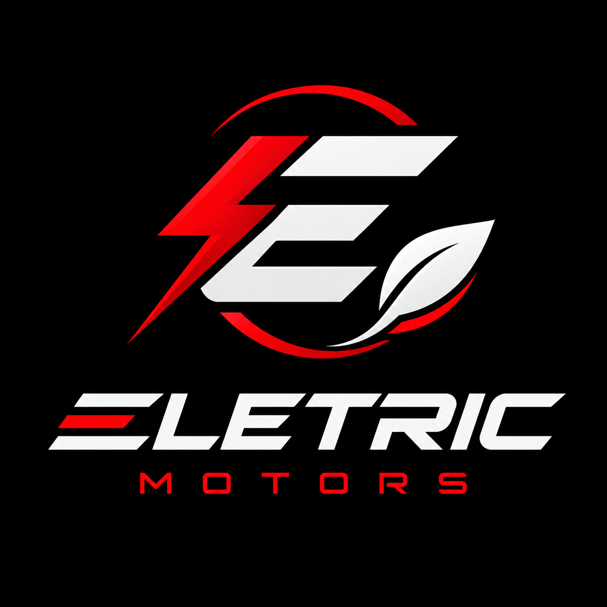

A Eletric Motors foi criada no Rodolpho Zaninelli, em Curitiba, com a proposta de desenvolver uma nova geração de veículos elétricos. A empresa nasceu da ideia de unir tecnologia, inovação e sustentabilidade para criar soluções de mobilidade mais modernas e responsáveis com o meio ambiente.
Desde sua criação, a Eletric Motors busca desenvolver produtos que acompanhem o avanço da tecnologia sem deixar de lado a preocupação com o futuro do planeta. A empresa acredita que a mobilidade pode evoluir de forma mais limpa, eficiente e sustentável.
O principal objetivo ambiental da Eletric Motors é contribuir para a melhoria da qualidade do ar e para a redução dos impactos causados pelo uso de combustíveis fósseis. Para isso, a empresa busca desenvolver veículos que não dependam diretamente de petróleo ou de combustíveis à base de carbono para funcionar.
Além de reduzir a emissão de poluentes durante o uso, a Eletric Motors procura incentivar o uso de fontes de energia renovável, contribuindo para uma mobilidade mais sustentável e preparada para o futuro.
A principal solução desenvolvida pela Eletric Motors são motos elétricas sustentáveis de última tecnologia. Elas foram pensadas para oferecer uma alternativa aos veículos convencionais, combinando mobilidade urbana, tecnologia e preocupação ambiental.
As motos elétricas utilizam motores movidos a eletricidade, proporcionando uma experiência de transporte moderna e eficiente. A proposta é oferecer um veículo adequado para o uso cotidiano, reduzindo a dependência de combustíveis tradicionais e tornando os deslocamentos urbanos mais sustentáveis.
Um dos principais diferenciais da Eletric Motors é a utilização de propulsão elétrica, que não gera emissões de gases pelo escapamento durante o funcionamento da moto. Isso ajuda a reduzir a poluição atmosférica diretamente relacionada aos veículos movidos a combustíveis fósseis.
Outro diferencial é a possibilidade de utilizar energia proveniente de fontes renováveis para recarregar as baterias. Dessa forma, a Eletric Motors busca unir mobilidade elétrica e energia limpa, criando uma solução que possa contribuir para um futuro com menos poluição e menor dependência do petróleo.
Além da preocupação ambiental, a empresa também valoriza a inovação tecnológica, eficiência energética e desenvolvimento sustentável, buscando transformar a maneira como as pessoas se deslocam pelas cidades.
Motos elétricas sustentáveis com tecnologia de última geração.
Redução da poluição do ar e menor dependência de combustíveis fósseis.
Utilização de energia elétrica e fontes renováveis.
Uma alternativa moderna, eficiente e sustentável para a mobilidade urbana.